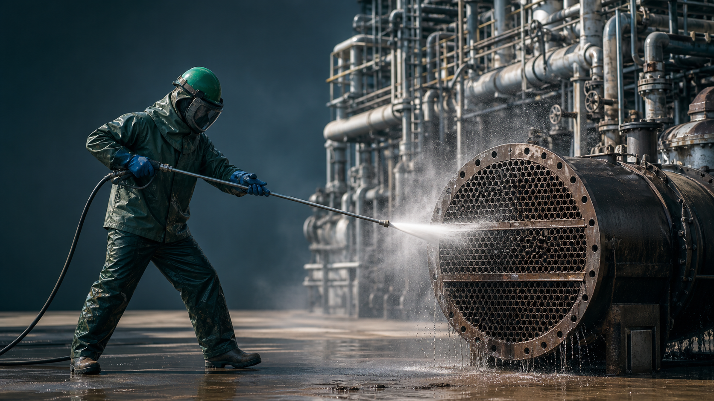
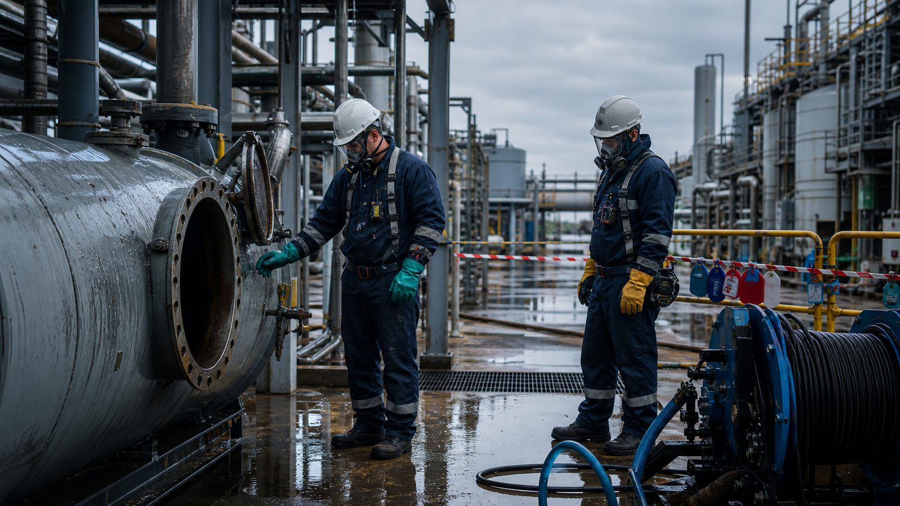
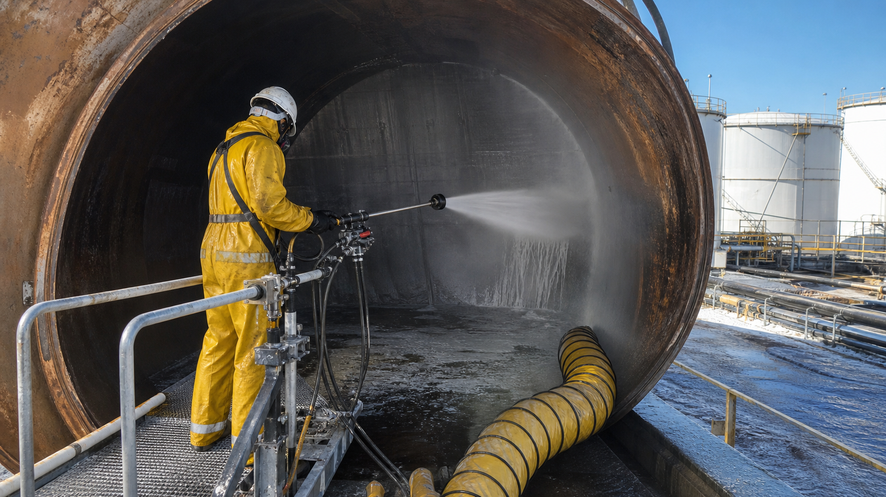
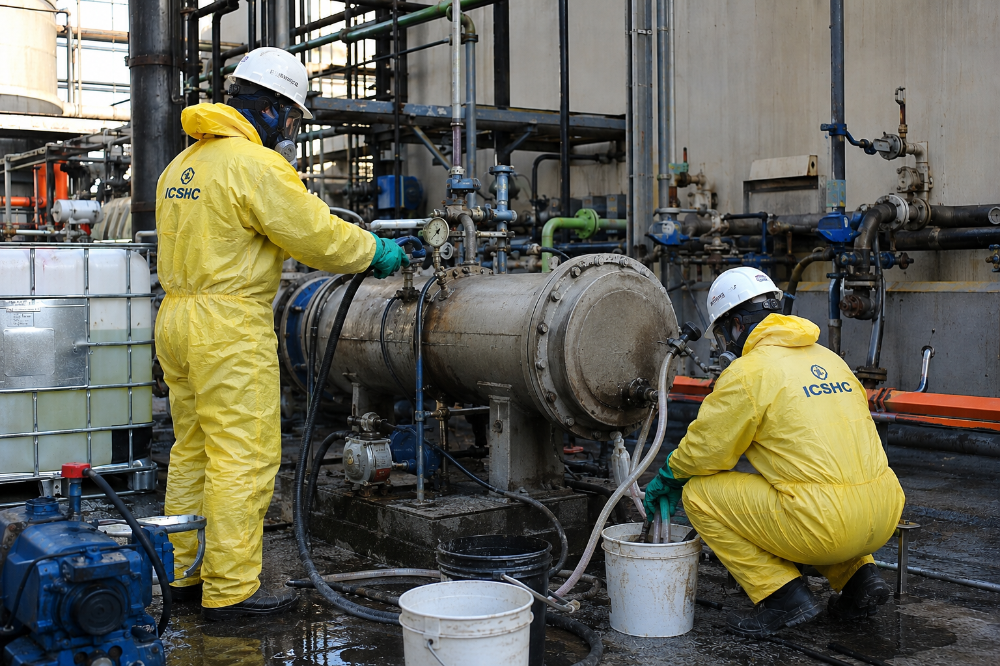

Submission
Company, project and safety management documents.
For chemical, power and energy industries, ICHSC develops industry standards that support compliant equipment cleaning, tank work and pipeline maintenance.
From high-pressure water jetting to chemical cleaning, tank entry and pipeline maintenance, our framework connects work controls with documented compliance.






Safety assessment, competence requirements and work controls for heat exchangers, reactors, boilers, tube bundles, towers and complex equipment.
Consult water jetting controls →/a>Process review, risk identification and compliance documentation for acid cleaning, alkaline cleaning, descaling, degreasing, passivation and waste handling.
Consult chemical cleaning compliance →/a>


Isolation, testing, ventilation, rescue and permit-to-work review for petrochemical tanks, energy tank farms and confined-space cleaning projects.
Consult confined-space work →/a>Review, quality acceptance and compliance verification for long-distance pipelines, process piping, turnaround maintenance and online/offline cleaning.
Explore compliance support →/a>


A documented loop for submission, review, assessment and certification output.
Company, project and safety management documents.
Initial review against the applicable standard.
On-site or remote assessment by level.
Certificate issued after successful review.
ICHSC certification is an association-developed industry standard for internal compliance management and commercial credibility. It is not a government or ISO certification.
Email info@ichsc.com →/a>